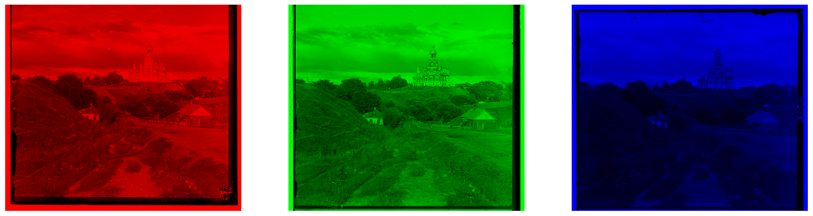
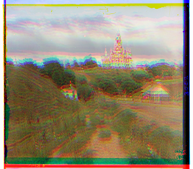

Project 1: Colorizing the Prokudin-Gorskii Photo Collection
By: Andi Liu
1. Introduction
For this project, we are using a dataset of pictures taken by Sergei Mikhailovich Prokudin-Gorskii. Each picture is a set of three glass plate negatives,taken with three different color filters of Red, Green, and Blue. For this project we are taking the three negatives and combining them into a single color image.
To start, we can place the three negatives side by side to get an idea of what they look like. For now we will start with an image with smaller
filesize, which is an image of a cathedral.
This is what the negatives look like with the red, green, and blue filters applied.
Now let us see what happens if we naively overlay the three color-filtered negatives as they are.
While we seem to get something resembling full-color, there are clearly many issues with this photo. First and most glaring is the alignment of the negatives is poor,
giving the image a blurry effect, and we can clearly see the overlaid copies of the image. For the first step of this project, we will focus on this alignment issue.